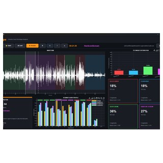

VoxScope: A Deployment-Oriented Analysis Framework for Extreme Vocal Distortion Techniques in Heavy Metal

Abstract
Extreme vocal distortion techniques are a defining element of heavy metal performance, yet their computational analysis remains relatively underexplored, particularly for finegrained discrimination among acoustically similar harsh-vocal styles. This paper presents a practical analysis pipeline for extreme vocal distortion techniques using the Extreme Metal Vocals Dataset (EMVD). The study focuses on four principal classes and combines structured signal preprocessing, handcrafted acoustic feature extraction, singer-independent evaluation, and deployment-oriented recording-level inference. To reflect both controlled and realistic vocal conditions, separate pipelines are developed for vowel-based and lyric-based recordings, and Random Forest, Support Vector Machine (SVM), and AdaBoost.M2 are compared under singer-level partitioning. In singer-independent testing, the best vowel-based result achieved 89.74% accuracy, while the best lyric-based result achieved 87.21% accuracy. However, recording-level analysis showed that SVM produced more stable and acoustically plausible segmentwise behavior, making it the most suitable backend for deployment. These results show that practical extreme-vocal analysis benefits from evaluation beyond benchmark scores alone and can be supported by an interpretable acoustic pipeline for more realistic recording-level use.
In one line
A deployment-oriented framework for analysing extreme vocal distortion techniques used in heavy metal singing.
Cite
@inproceedings{bhuiyan2026voxscope,
title = {VoxScope: A Deployment-Oriented Analysis Framework for Extreme Vocal Distortion Techniques in Heavy Metal},
author = {Md. Mehedi Hasan Bhuiyan and Fahmid Amin Zawad and Sadman Rahman and Kazi Newaj Faisal},
booktitle = {Proceedings of IEEE SPICSCON},
year = {2026}
}